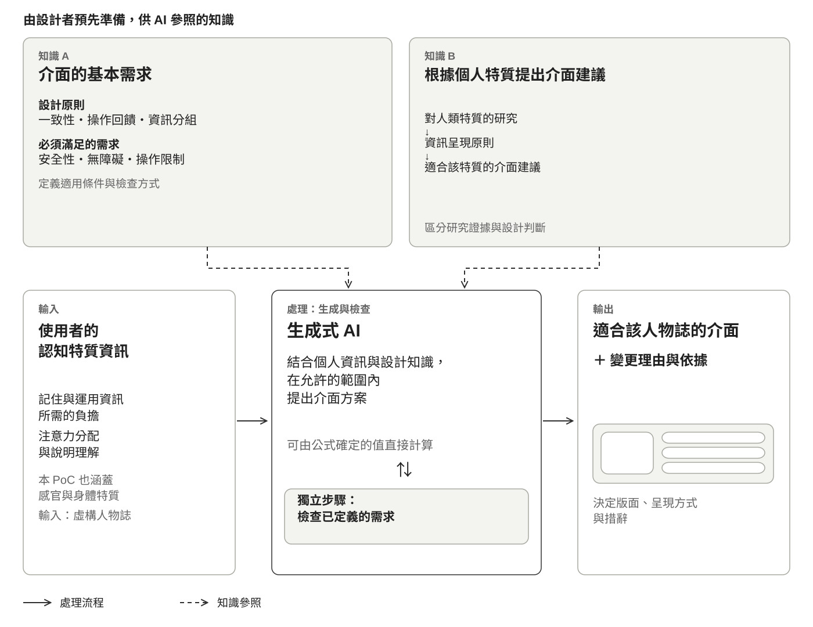
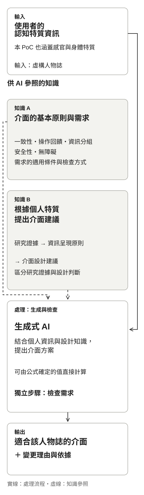
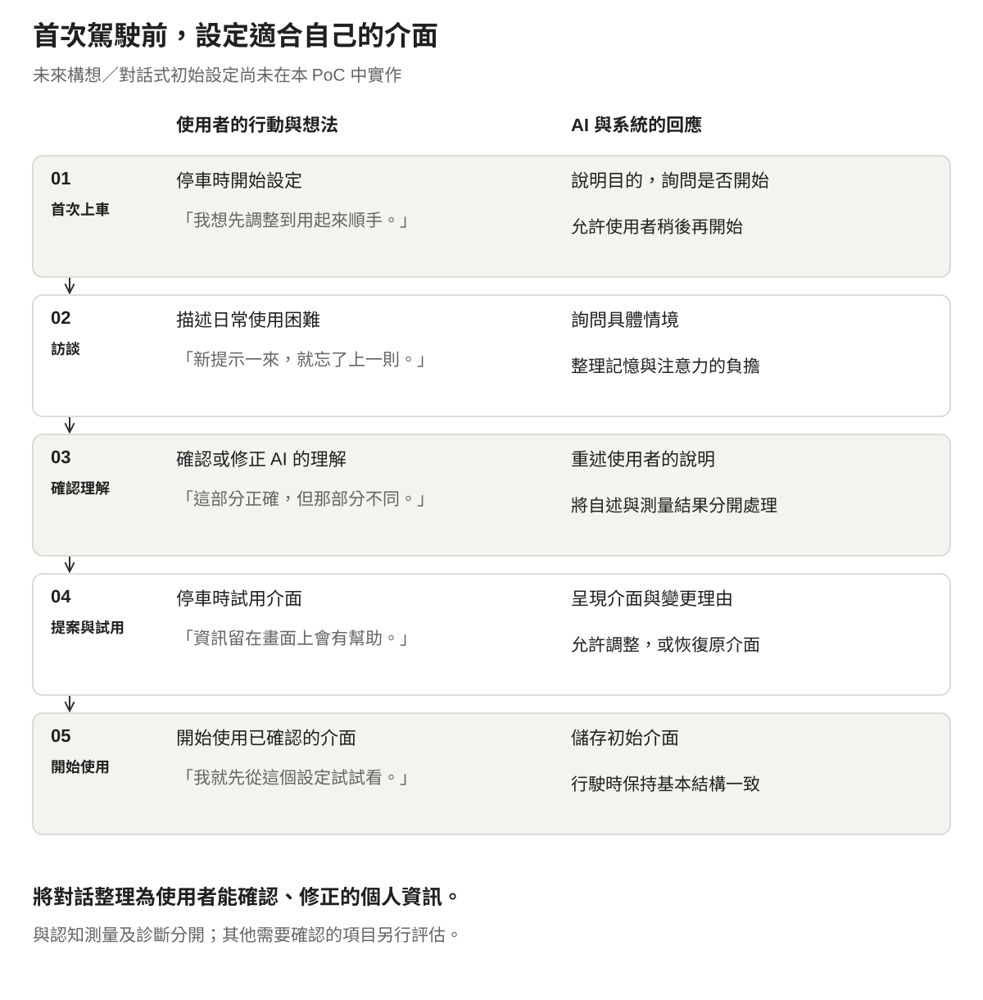
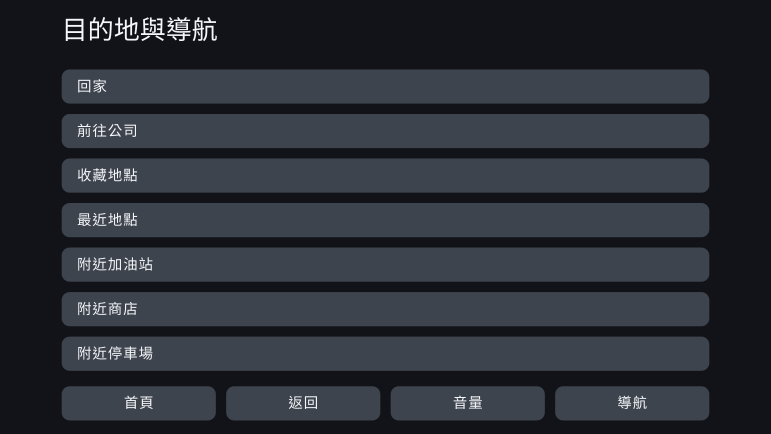
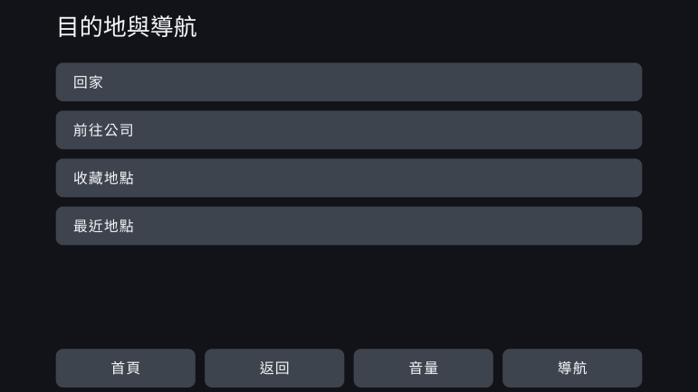
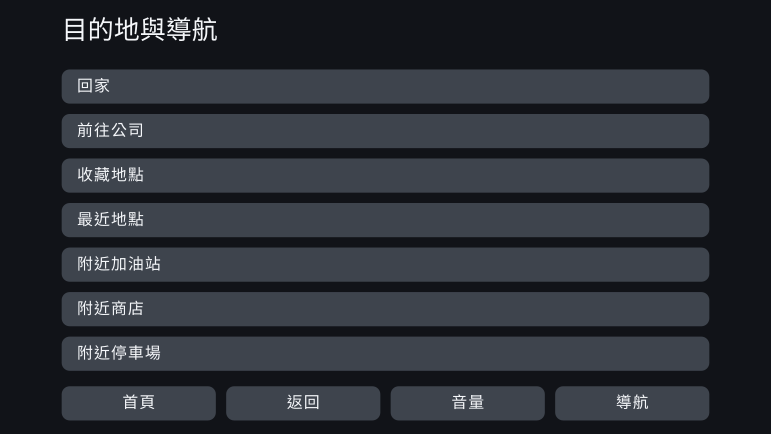

以約束驅動設計實現個人化介面
2026年8月
概述
本專案提出一套系統，輸入與介面使用相關的認知特質資訊，便能生成適合該人的介面。它結合介面設計原則、安全與無障礙需求，以及對人類特質的研究。
我採用稱為「約束驅動設計」的方法：由人定義需求及適用條件，再讓生成式 AI 在界限內提出具體方案。以車用導航為案例，我建立一個概念驗證（PoC），根據 13 個虛構人物誌生成介面；人物誌也包含感官與身體特質。生成後，再以獨立步驟檢查輸出是否符合需求。
比較結果中，有一個輸出因身體特質而出現明顯的版面變化，多數輸出的視覺變化則很小。易用性與安全性尚未由使用者參與測試。這項工作有助於釐清哪些決定可交給生成式 AI，以及哪些需求限制了個人化的範圍。
背景：一套介面能滿足多少不同需求？
多數產品會設計並提供一套盡可能多人可用的通用介面。然而，一次能掌握的資訊量、注意力投放的難易、語言表述的理解難度、精細操作的順手程度，都因人而異。通用介面照顧到了很多人，卻未必貼合其中的某一個人。
以群體為單位的評估同樣有其侷限。例如美國 NHTSA 於 2013 年公布的自願性指引中，關於視線的各項接受標準要求 24 人中至少 21 人達標。這並不是一個意味著所有人都能同樣使用的條件。[1]
即便產品可以更改字級或顯示資訊量，使用者也必須先注意到設定的存在，把它和自己的不便連結起來，再選出合適的調整。設定功能是不是沒有被充分利用，人們就這樣在不合適的狀態下繼續使用？這個疑問是本專案的起點。
在車用導航中，看螢幕與做操作會與駕駛所需的注意力相競爭。[1] 如果與介面的不匹配可能加重這份負擔，那麼在開始使用時就準備好貼合這個人的狀態，從易用性與安全兩方面都值得探討。
生成式 AI 讓我能將個人資訊與設計知識轉化為介面的流程做成原型。我探索這是否能減少逐人手動設計獨立介面的工作。
本專案未研究人們使用這些設定的頻率，也未檢驗不合適的介面如何影響事故風險。
提案：結合個人資訊與兩類設計知識
系統輸入與介面使用相關的認知特質資訊。本次概念驗證使用的虛構人物誌，也包含感官與身體特質。AI 將這些資訊與預先準備的兩類知識一併考量：介面的基本設計規則，以及將人類特質連結到介面建議的知識。
AI 在允許的界限內生成介面，再由獨立檢查步驟驗證是否符合需求。輸出包含個人化介面，以及修改了什麼、為什麼修改的說明。


輸入：關於這個人的資訊
輸入包括：記住並運用資訊的難易程度、是否容易被其他刺激分心，以及哪種說明方式最容易理解。實作也涵蓋視覺與手部靈巧度。系統使用與介面互動相關的資訊，而非僅憑診斷名稱決定畫面。
知識 A：介面的基本需求
整理介面的基本設計原則：一致性、對操作的回饋、資訊的分組、文字與操作對象是否易見等。在此之上，把車用介面的操作限制與無障礙條件，連同其適用情境一併定義。
知識 B：將人的特質連結到介面建議
這類知識將人類特質研究連結到資訊呈現原則，再轉化為介面設計。例如，一邊記住資訊一邊完成任務有困難，便可考慮減少記憶需求，進而讓必要資訊持續顯示在畫面上。
研究結果未必能直接給出車用導航介面的具體設計數值。我將研究已確立的知識，與據此做出的設計判斷分開處理。對所有人都有幫助的改善，納入基本規則，而不計為個人化的成果。
體驗構想：首次駕駛前找到合適的介面
未來構想：本次概念驗證尚未實作對話式初始設定。
想像第一次坐進新車的駕駛座。車輛靜止時，AI 代理會詢問你平常的使用經驗。你不必操作複雜的技術設定，只需描述哪些地方讓你感到困難，以及怎樣的方式比較順手。

-
首次駕駛前：開始對話
AI：「為了讓畫面更適合您，可以請您說說平常使用介面的習慣嗎？如果願意，也可以稍後再開始。」
使用者理解其目的，選擇現在開始還是稍後再說。
-
訪談：談談困擾
AI「當導航提示接連出現時，通常在哪些地方會變得不好理解？」
使用者「下一條說明一來，我有時就忘了剛才那條的內容。」
AI 詢問具體情境，找出與記憶及注意力相關的使用困難。
-
確認理解：可以糾正 AI 的理解
AI「比起記住步驟再往下走，讓需要的資訊留在畫面上會更好用——我這樣理解對嗎？」
使用者確認或修正 AI 的理解。對話中的自述資訊，與認知測量值及診斷分開處理；需要測量的資訊則另行評估。
-
提案與試用：聽過理由，再試畫面
AI「為減輕需要記住的負擔，我提議一種能同時看到目前操作與下一步的畫面。」
使用者在停車時試著選擇目的地等。可以說「之前那個更清楚」「這裡想換個說法」，必要時可以調整提案，或退回原來的介面。
-
開始使用：使用確認過的介面
確認過的介面儲存為初始設定。車輛行進時，基本結構維持一致，讓使用者能沿用已學會的操作方式；車輛靜止時，則可以再次檢視與調整。
這段對話透過使用者能說明需求、糾正誤解的往來，建立合適的初始設定，而非一次就替使用者定型分類。
實作：區分固定需求與交由 AI 決定的項目
我實作了從接收個人特質資訊，到生成、驗證、繪製與比較介面的整套流程。本次沒有採用對話訪談，而是以 13 個特質不同的虛構人物誌作為輸入。
我選擇車用導航，因為它有可具體處理的需求：畫面面積、觸控目標大小、顯示資訊量，以及駕駛中允許的操作。
約束驅動設計的方法
本專案所稱的約束驅動設計，是由人定義需求與適用條件，再由 AI 在這些界限內提出方案。
在基於規則的參數化變更中，輸入與取值或選項的對應是事先定好的。本次構想不去填滿全部對應，而是定下允許的範圍與判斷依據，把尚未確定的具體取值與表述留給生成式 AI 裁量。實作上把由計算決定的部分與由生成式 AI 決定的部分組合起來。
| 依據能說明什麼 | 在實作中的處理 |
|---|---|
| 已確立具體數值或數學關係 | 在已確認的條件與適用範圍內計算 |
| 知道調整方向，但程度無法確定 | 在符合調整方向與約束的範圍內選擇數值，並記錄為尚未驗證的設計判斷 |
| 僅憑依據無法確定妥當的選擇 | 作為探索性提案處理，並標記為需要評估 |
把研究知識落到介面上時，記錄了出處、適用條件與設計判斷。透過與介面一併輸出變更理由，使「為什麼對這個人是這樣的畫面」可以被追溯。
以獨立步驟檢查生成的介面
介面以結構化資料生成，描述畫面元素與配置，再依資料繪製。程式碼檢查數值與結構需求；另一項獨立的大型語言模型（LLM）檢查，評估部分需要語意解讀的需求。系統也記錄不在自動檢查範圍內的項目，以及因資訊不足而無法驗證的項目。
檢查所確認的是「是否符合已定義的條件」。實際是否好用、安全性是否提升，則需要由使用者來評估。
設計時若發現需求互相衝突，由 AI 指出，再由人決定如何修訂。AI 不會在每次生成介面時自行更改需求。
介面比較：明顯改變與大致不變的版面
比較基準是不輸入個人特質、以通用預設值生成的介面。在功能集合相同的前提下，比較輸入個人特質後的輸出。
以下圖像是原型的輸出，並非市售車用導航改造前後的對比。 人物誌也不是對真實使用者的再現，而是為確認特質影響而設的虛構輸入。
較大的觸控目標
PS-12：難以精確觸控的人物誌
與作為基準的 PS-01 在年齡、認知、感官特質上保持一致，只改變手指操作特質。在所示圖像中，各操作對象變大，畫面中央排列的項目由 7 項減為 4 項。底部的固定按鈕不計入這一數量。
通用預設介面


輸入個人特質後生成的介面


觸控目標變大，代表一個畫面中可選的項目變少。設計旨在保留相同的功能集合，但單憑這張截圖，無法判斷前往後續畫面的操作是否容易。
大致不變的版面
PS-01｜設為基準的人物誌
字級上雖有細微差別，但項目數量、版面配置、觸控區域的大小幾乎相同。在本次的規則與輸入組合下，並未得到相對通用預設介面大幅改變結構的結果。
通用預設介面

輸入個人特質後生成的介面


結果與討論：還有多少生成自由？
生成式 AI 的額外價值仍未獲證實
在我的目視比較中，PS-12 是唯一出現明顯版面變化的輸出。其他輸出雖有措辭與設定差異，但外觀未呈現明顯的價值差異。
PS-12 的更動也在「調整顯示尺寸與顯示量」的設定所能實現的範圍之內。不必自己去找設定、初始狀態就已整備好——這種體驗是有潛力的。但這種體驗的價值，與「生成介面是否需要生成式 AI」，必須分開驗證。
本次 PoC 並未證明貼合認知特質能改善操作成績，也未證明生成式 AI 做出的介面優於基於規則的方式。
本次實作的設計空間有限
在確保文字與操作對象所需尺寸、並套用畫面面積與顯示量的條件之後，可選的結構就越來越有限。實作上由計算或固定結構決定的部分也不少，AI 在多個妥當方案之間挑選的餘地很小。
措辭的改寫上還留有自由度，但這類差異不像畫面結構那樣顯眼，本次目視評估難以充分捕捉其價值。我認為，要確認生成式 AI 的價值，需要可選方案本身具有幅度，且這些差異對使用者的體驗具有意義。
這一結果只針對本次收集的規則、採用的介面參數與實作的表現範圍，不能說是車用導航整體或個別化介面整體的極限。
另外，我並未逐一直接查閱 JIS、ISO 等相關標準的全部正文，而是以論文、官方指引、公開資料、部分標準正文或預覽等可取得的資料為基礎構成設計知識。參照範圍有可能影響了可採用的設計選項。不過，細讀標準正文究竟會拓寬自由度，還是會因附加條件而進一步收窄，仍有待日後確認。
與 AI 的協作，帶來了規則本身的改進
成果同樣出現在「設計用於生成的條件、並使其可被檢查」的過程之中。
| 發現的問題 | 設計回應 |
|---|---|
| 同一元素存在多個下限，組合方式含糊不清 | 明確了適用關係，使任一下限都不會被突破 |
| 本應只在行駛中適用的條件，在停車時也被套用 | 明示了每項條件適用的行駛狀態 |
| 把措辭的易懂程度與是否配有圖示合併成了一個維度 | 將其拆為彼此獨立的設計維度，找回了被無謂排除的選項 |
| AI 把並不適用於某項輸出的條件也當成了判斷依據 | 針對每項輸出，明示了應參照的條件 |
| 原本打算留給 AI 的判斷，被固定在了實作一側 | 重新檢視了規格與實作之間的分工 |
AI 指出問題，我加以評估，再將決定反映到設計。這個反覆過程釐清了哪些需求適用於所有人，以及介面在哪些方面可以個人化。
後續工作：評估個人化與生成式 AI 的角色
接下來想把兩個問題分開驗證。
其一，不必自己設定、開始使用時介面就已整備好，這樣的體驗究竟有多大價值。為此要實作對話詢問、糾正理解直至試用的全過程，確認輸入資訊的可靠程度與帶給使用者的負擔。
其二，在什麼樣的設計對象上，生成式 AI 帶來的方案差異才會轉化為體驗的改善。希望拓展到這樣的對象：在守住必要條件的同時，資訊結構與操作流程上仍留有多個妥當方案。
未來將以真實使用者在相同任務中比較三種介面：通用預設介面、根據個人特質以規則調整的介面，以及 AI 生成的介面。完成時間、錯誤、視線停留與主觀負荷等指標，有助於區分個人化的影響與使用生成式 AI 的影響。
同時推進對相關標準的查證，更新「研究已確認之事」與「設計判斷」之間的界線。除了條件可被檢查之外，把「在條件之內為使用者留下有意義的選項」作為下一個課題。
參考資料
- NHTSA，Visual-Manual NHTSA Driver Distraction Guidelines for In-Vehicle Electronic Devices（2013 年公布）。自願性指引。關於視線的接受標準見 VI.E，關於注意力偏離與風險的說明見正文 I.C 等處。這並不意味著本 PoC 已取得符合該測試的認證。閱讀 Federal Register 原始文件